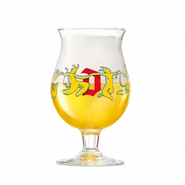
Brouwerij Duvel Moorgat
Duvel 666
Duvel 6,66% is een toegankelijk bier met typische Duvel punch. Hemels zacht van smaak, licht aromatisch en verfrissend fruitig door 6 verfijnde hopsoorten.
Eetcafé · Dorpsstraat 7 · Ilpendam
Sinds 1987 het café van de familie Dekker, midden in het dorp. Een uitgebreide kaart, dus voor ieder wat wils.
Welkom
Het Wapen van Ilpendam is een eetcafé waar u terecht kunt voor een snack, lunch, diner of een borrel. Door onze uitgebreide menukaart is er voor ieder wat wils.
De keuken is geopend voor lunch vanaf 11:00 uur en voor diner tot 21:00 uur. Dinsdag tot en met zaterdag hebben wij na 21:00 uur een 'late night' snackkaart. Op zondag is de keuken geopend tot 21:00 uur.
Team het Wapen van Ilpendam
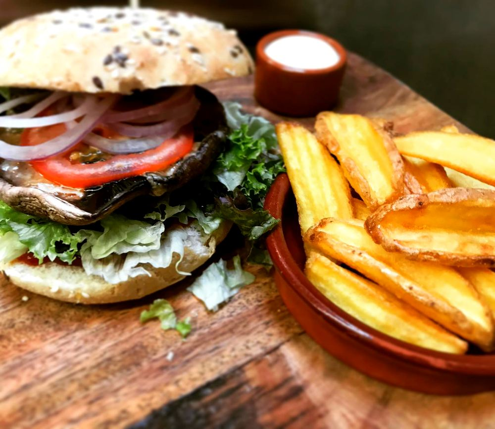
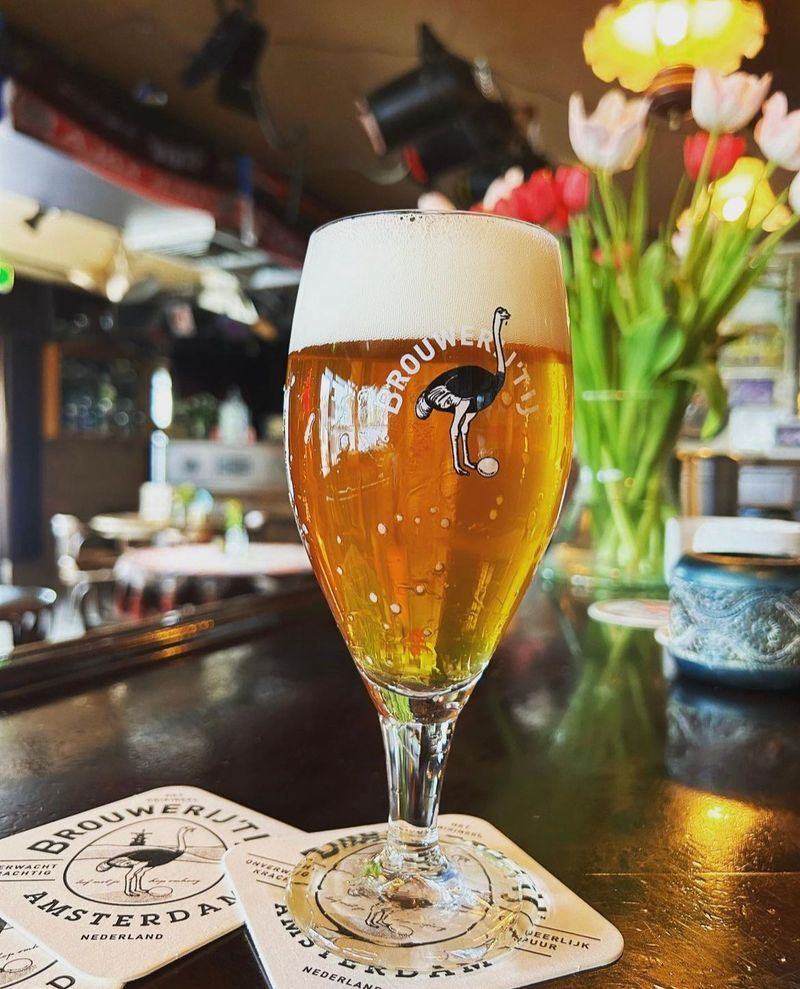
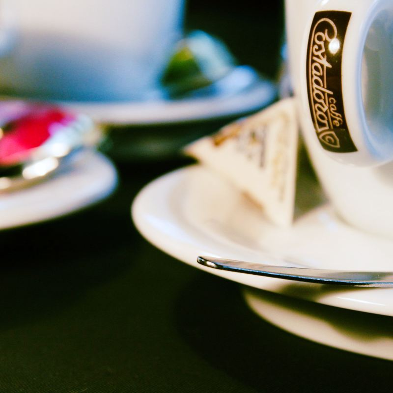
Wilt u zeker zijn van een tafel? Reserveren kan uitsluitend via de telefoon: 020 436 33 73.
Liever thuis genieten? Al onze gerechten kunnen worden afgehaald. Bestellen kan telefonisch van dinsdag tot en met zondag vanaf 11:00 uur.
Dinsdag tot en met zaterdag na 21:00 uur hebben wij een 'late night' snackkaart. Maandag zijn wij gesloten.
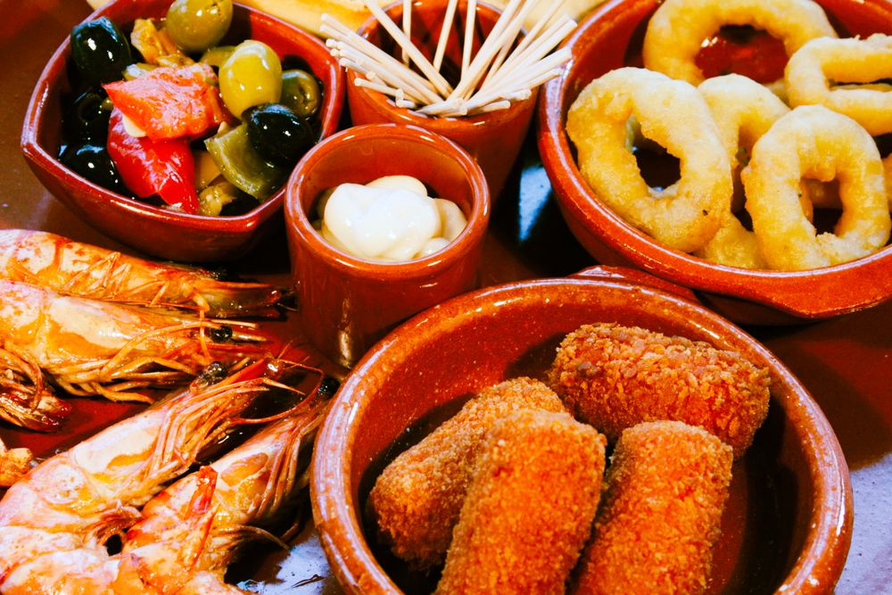
Specialiteiten
Inktvisringen, kroketjes, gamba's..
Met Roquefort, tomaat, augurk, ui, sla & aardappel wedges
Met cherry tomaat, champignon, dille en citroen
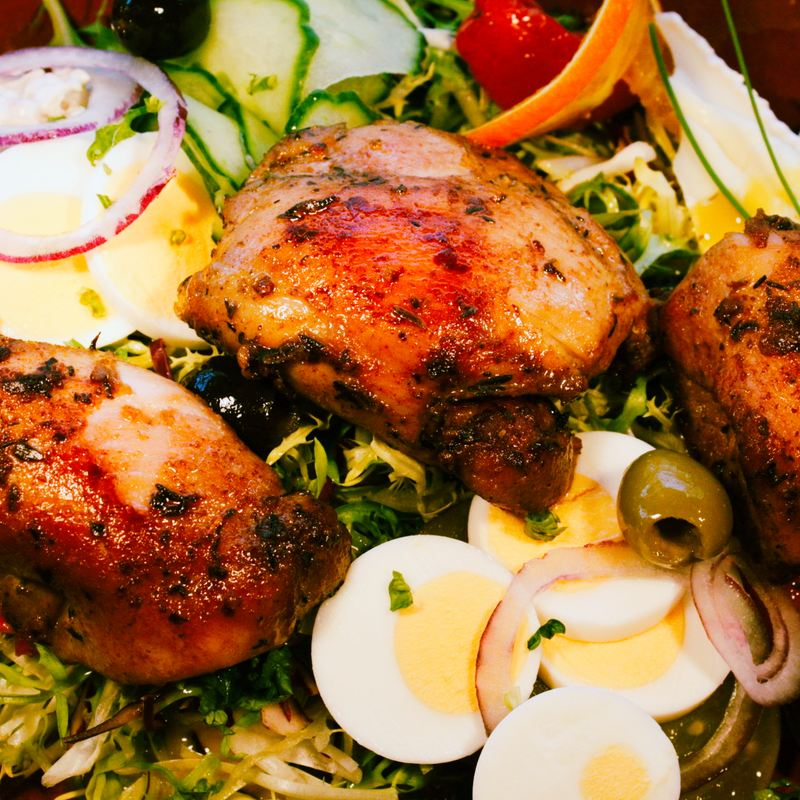
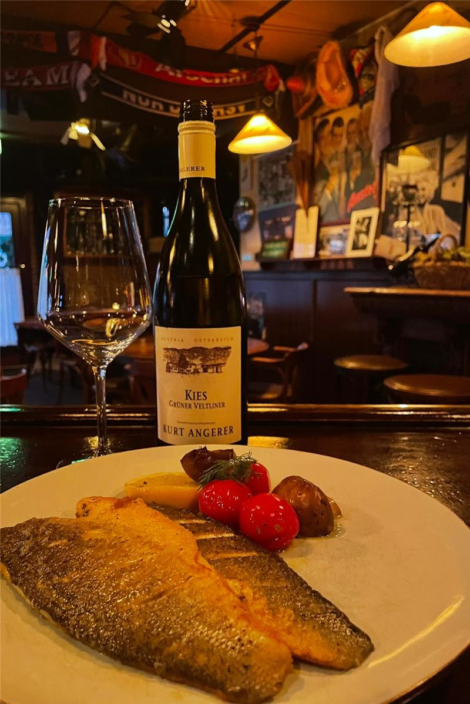
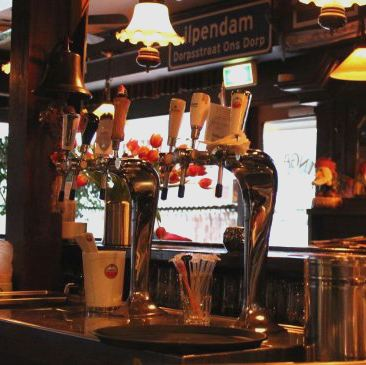
De kaart
Alle gerechten zijn ook af te halen. Bestellen kan telefonisch, dinsdag t/m zondag vanaf 11:00 uur.
Bier van de maand · november
Ons bier van de maand voor november. Vraag gerust aan de bar wat we nog meer schenken.

Brouwerij Duvel Moorgat
Duvel 6,66% is een toegankelijk bier met typische Duvel punch. Hemels zacht van smaak, licht aromatisch en verfrissend fruitig door 6 verfijnde hopsoorten.
Brouwerij 't IJ
Een bokbier op onze IJ manier van 6,5%. Donker en stevig, maar minder zoet dan je misschien zou verwachten. Aroma's van geroosterde granen, een beetje koffie en mooi donker fruit. Een prettig droge afdronk, ideaal tijdens de natte herfstdagen.
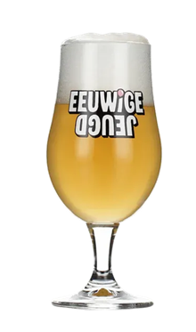
Brouwerij 't IJ & de Eeuwige Jeugd
Wanneer twee brouwerijen scharrelen ontstaat een flamboyant fris en blond bier van 5,6%. Licht zoet, zacht bitter en paradijselijk hoppig.
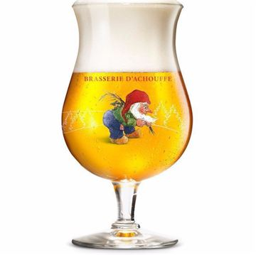
Brouwerij Achouffe
Een Belgisch blond bier, voor het eerst in 1982 gebrouwen door de zwagers Pierre Gobron en Chris Bauweraerts. Wat begon als hobby groeide uit tot Brasserie d'Achouffe. Ongefilterd, hergist op fles of fust, aangenaam fruitig en gekruid met koriander en een lichte hopsmaak.
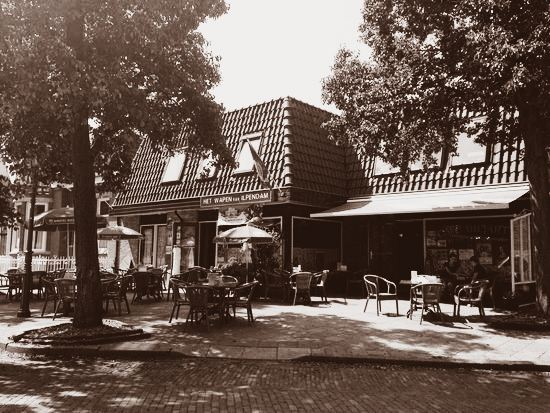
Over ons
Wij zijn Janny en Hans Dekker en zijn sinds 4 juni 1987 de eigenaren van het Wapen van Ilpendam. Janny kwam na haar schooltijd in de horeca terecht. Hans is geboren in een café in Ilpendam en volgde zijn opleiding in restaurant Neeltje Pater in Broek in Waterland. Ze kwamen elkaar tegen in de Miro, waar ze samen werkten, en keken uit naar een café in Ilpendam.
Gerrit van café de Box wilde wel verkopen, maar we werden het niet eens. Toen kwam het Wapen van Ilpendam van Jelle Walgreen te koop. Janny belde zenuwachtig: "het Wapen van Ilpendam staat te koop." Binnen een week stond de hele familie Dekker en Haan, met vele vrienden, te timmeren en te schilderen, en tussen de spijkers op de bar werden de eerste biertjes verkocht.
"Janny en Hans, dit is de derde keer dat ik dit pand open, en hopelijk nu voor de laatste keer."Burgemeester Kerkhoven bij de opening · wij beloofden het plechtig
Eerst was het de bloemenzaak van Han en Gre, toen het café van Jelle en nu wij. Onze dochter Marjolein is sinds 2018 mede-eigenaar, waar wij ontzettend trots op zijn.
Agenda
De Kerstmarkt vindt plaats op vrijdag 11 december op het Gonne Donkerplein. De markt start om 16:00 uur en eindigt om 20:00 uur.
Interesse in een kraam? Mail naar info@wapenvanilpendam.nl.
Meer informatie volgt.
Meer informatie volgt.
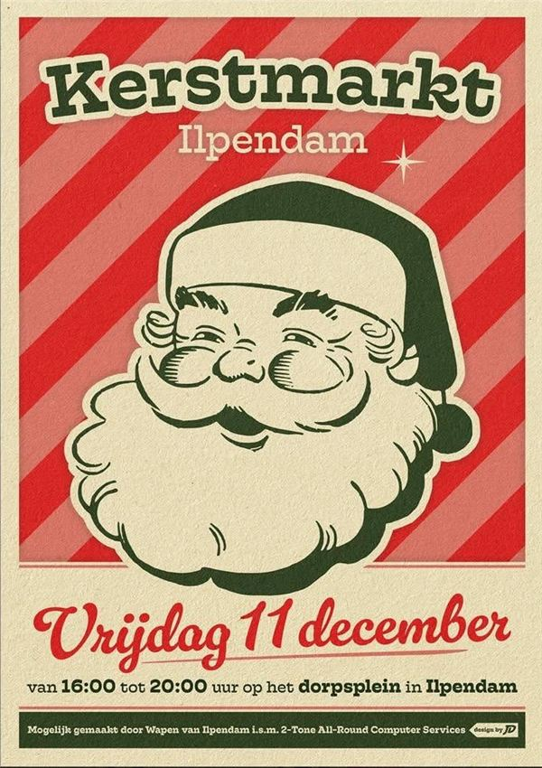
Contact
Dorpsstraat 7
1452 PD Ilpendam
Tel. +31 20 436 33 73
E-mail info@wapenvanilpendam.nl
Reserveren kan uitsluitend via de telefoon.